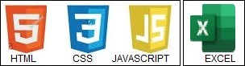
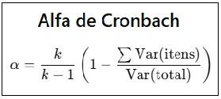
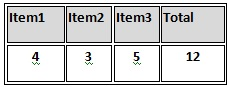
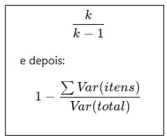

1) Primeiramente deverá fazer download da planilha (que já está previamente preenchida), basta clicar neste link para descarregar a planilha:
ferramenta_aig_com_dados.xlsx;
2) Esta segunda planilha tem 20 estudantes, para testes com mais estudantes. ferramenta_aig_com_dados2.xlsx;
3) Ele irá para a sua pasta Download em seu computador, basta ir no botão "Escolher arquivo", buscar o arquivo na pasta e importa-lo;
4) Aparecerá abaixo "Selecionar aba", escolha pelo menu o ítem "Responses";
5) Após basta clicar em "Calcular Alfa" que o resultado será apresentado logo abaixo:
SOBRE O APP
Linguagens utilizadas
HTML = estrutura
CSS = aparência
JavaScript = lógica e cálculos e a lógica do aplicativo, incluindo:
- Ler a planilha Excel usando SheetJS (XLSX.js);
- Identificar as colunas dos itens;
- Fazer os cálculos (variância, soma, alfa de Cronbach);
- Mostrar o resultado na tela.
EXCEL - Programa Microsfot Office (Planilha Excel) Office (Planilha xlsx)

O que é o Alfa de Cronbach
O Alfa de Cronbach é uma medida de confiabilidade que avalia a consistência interna de um conjunto de itens, como as perguntas de um questionário. Ele verifica o quanto os itens de uma escala estão relacionados entre si e medem o mesmo construto subjacente, como a satisfação do cliente ou a autoestima. Um valor alto indica que os itens são consistentes, enquanto um valor baixo pode indicar que os itens não estão medindo a mesma coisa ou que são inconsistentes. Como funciona Avalia a consistência interna: O alfa de Cronbach mede o grau em que os itens de uma escala concordam entre si. Indica confiabilidade: É uma medida da confiabilidade da escala, ou seja, a extensão em que ela é uma medida consistente de um conceito. Correlação entre itens: Ele é calculado com base nas correlações entre os itens da escala. Quanto mais correlacionados os itens estiverem, maior será o valor do alfa. Escala de 0 a 1: Teoricamente, o valor do alfa varia de \(0\) a \(1\). Valores a partir de \(0,70\) são geralmente considerados aceitáveis, com valores mais altos indicando maior confiabilidade. Limitações: O alfa de Cronbach pode ser baixo se houver poucos itens na escala ou se os itens forem muito heterogêneos.
O arquivo HTML criado para você funciona como um miniaplicativo web.
1 — Permite enviar um arquivo Excel (.xlsx): O usuário clica em “Enviar planilha” e escolhe o arquivo.
2 — Lê o arquivo no navegador. Usa a biblioteca SheetJS (XLSX.js) para:
- Ler o conteúdo da planilha;
- Descobrir quais abas existem;
- Permitir ao usuário escolher uma delas.
- Link para baixar a planilha:
ferramenta_aig_com_dados.xlsx
3 — Identifica colunas que começam com “Item”
Qualquer coluna cujo nome comece com:
Item
item
ITEM
item1
Item_01
é considerada um item da escala.
4 — Extrai somente essas colunas:
O aplicativo pega apenas as colunas dos itens e converte os valores para números.
5 — Calcula o Alfa de Cronbach em JavaScript:
A lógica matemática é aplicada dentro do navegador, sem servidor.
6 — Mostra o resultado estilizado na tela:
- Exibe algo como: Alfa de Cronbach: 0.8421
(2) Como o cálculo do Alfa de Cronbach funciona (Resumo direto)
O Alfa de Cronbach mede se os itens da escala avaliam o mesmo construto, ou seja, se são consistentes internamente.
O cálculo segue esta fórmula:
onde:

• k = número de itens
• Var(itens) = variância de cada item individual
• Var(total) = variância da soma dos itens de cada participante
(3) Passos que o código segue:
1 — Calcula a variância de cada item (Var(item))
Para cada coluna Item1, Item2, Item3…
2 — Soma essas variâncias:
∑Var(item)
3 — Soma os itens por linha (pessoa por pessoa)
Exemplo:

4 — Calcula a variância dos totais (Var(total))
5 — Aplica a fórmula
Com todo mundo respondido, aplica:
